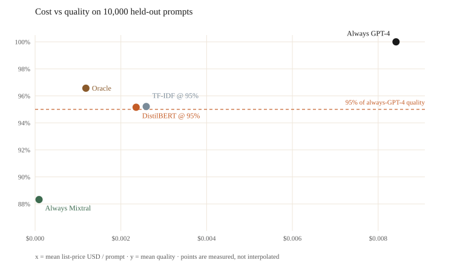

2026-09-10 · post #5
A $0.08 prompt router
Most prompts do not need the expensive model. The trick is knowing which ones do, before you pay for the call.
Today we train a small classifier that reads a prompt and picks Mixtral or GPT-4. On 10,000 held-out prompts it keeps 95% of always-GPT-4 quality, sends 68% of traffic to Mixtral, and cuts list-price cost by 72%. The headline run cost $0.07 on a Vast.ai RTX 3090. The whole issue, including a 10% sample and a failed boot, was $0.08.
You can train it on compute.cx in four steps:
- Setup compute
- Prepare the data
- Setup the model for training
- Train the model and read the curve
Setup compute
Create an account, install the CLI, add credits.
curl -fsSL https://compute.cx/install.sh | sh
compute setup
compute credits add 10Prepare the data
Nothing to upload. The job downloads routellm/gpt4_dataset on the machine: 109,101 training prompts and 10,000 validation prompts, each with a Mixtral 8x7B response, a GPT-4 Turbo response, and a 1–5 judge score for Mixtral.
We follow RouteLLM’s cut. If Mixtral scores 4 or 5, the cheap model suffices. If it scores 1–3, the prompt needs GPT-4. On the held-out set that label is true for 86.5% of prompts. Always sending those to Mixtral already gets you 88.3% of GPT-4’s quality — Mixtral’s 3s still count for something — and almost none of GPT-4’s bill.
The remaining 13.5% are why a router exists. Always-Mixtral misses the 95% quality target. Always-GPT-4 hits 100% and pays about $0.0084 per prompt at 2024 public list prices (Mixtral $0.24 / 1M tokens; GPT-4 Turbo $10 / $30 per 1M; tokens estimated as characters / 4).
Setup the model for training
Choose a model architecture
Two classifiers, same label:
- TF-IDF (1–2 grams, 50k features) plus logistic regression — the baseline you can train on a laptop.
- DistilBERT (
distilbert-base-uncased, 66,955,010 parameters) with a two-class head. Class-weighted so the rarer “needs GPT-4” prompts are not ignored.
Choose a loss function
Cross-entropy on cheap_suffices vs need_strong. Accuracy is reported. It is not the number that matters. The number that matters is: at 95% of always-GPT-4 quality, how much traffic can we send to Mixtral, and what does that do to the bill.
Train the model and read the curve
Grab the training script. That’s the only file you need. Hand compute.cx/SKILL.md to your agent, plus the special instructions below.
curl -fsSL https://raw.githubusercontent.com/theoriclabs/letsusecompute/main/posts/model-router/train.py -o train.pyWant to read it first? train.py.
Prompt-router training prompt
Use https://compute.cx/SKILL.md.
Special instructions:
- Download https://raw.githubusercontent.com/theoriclabs/letsusecompute/main/posts/model-router/train.py as train.py. Do not invent a script.
- Entrypoint: train.py::train
- Dataset: routellm/gpt4_dataset (the script downloads it on the machine)
- TF-IDF logistic baseline + DistilBERT (~67M params), binary cheap_suffices (Mixtral score >= 4)
- Use --gpu cheap. Do not pick H100 or MI300X unless a cheap run exceeds 40 minutes. Timeout 3600.
- Dry-run first. Then show the preflight quote and ask before confirming spend.
- After success, show routing accuracy, the cheap-traffic fraction at the 95% quality target, the implied cost cut, and download artifacts with compute artifacts list / get.Dry-run first. It only prints the upload plan — no dollars yet.
compute run train.py::train --gpu cheap --dry-rundry-run (local AST; no upload, no quote)
entrypoint: train.py::train
files:
train.py
third-party: datasets, huggingface_hub, sklearn, torch, transformers
gpu: cheapest (policy; no estimate)
timeout: 3600s
image: cuda_pytorch
pip: torch==2.5.1+cu124, transformers==4.46.3, datasets==3.6.0, scikit-learn==1.6.1, huggingface_hub
secrets: (none)Then run for real. Pass --gpu cheap. On this job the CLI quoted the RTX 3090 declared in the script.
compute run train.py::train --gpu cheap --timeout 3600 --waitYou’ll see the pick and the dollar quote before spend. Confirm if it looks right, or pass --yes.
Run preflight (billed by started minute):
provider: vastai
sku: RTX-3090
locked rate: $0.15/hr
timeout budget: 61 billed min → ≈ $0.16 total if the job runs to the timeout
balance: $10.63A 10% sample is enough to get the metric code right before the full 109k:
compute run train.py::train --gpu cheap --timeout 3600 --wait --args '{"max_train": 10900, "max_eval": 1000, "epochs": 1}'What the full run printed
Headline run run_2538f6a593a1fedfce8b4d4ce694c3d0, Vast.ai RTX 3090, 2 epochs, 21 billed minutes of training, $0.07. DistilBERT accuracy 76.88%, TF-IDF 74.52%. Then the curve:
| Policy | Quality | Cheap traffic | USD / prompt | vs always GPT-4 |
|---|---|---|---|---|
| Always Mixtral | 88.3% | 100% | $0.000092 | −99% |
| TF-IDF @ 95% | 95.2% | 66.1% | $0.002591 | −69% |
| DistilBERT @ 95% | 95.2% | 67.8% | $0.002356 | −72% |
| Oracle | 96.6% | 86.5% | $0.001184 | −86% |
| Always GPT-4 | 100% | 0% | $0.008416 | — |
DistilBERT beats “always cheap” on quality and “always strong” on cost. It also beats the TF-IDF baseline on the same target: a bit more Mixtral traffic, a bit less money. The oracle — route cheap exactly when the held-out label says so — shows how much headroom is left.
On a million similar prompts, always-GPT-4 is about $8,400 at these list prices. The DistilBERT router is about $2,360. Always-Mixtral is $92 and misses the quality bar.

Prompts the router sends to Mixtral look like everyday how-to questions (“how do i change the ram in my computer”). Prompts it sends to GPT-4 include long structured extraction and messy code edits. That split matches the label more often than not; it is not perfect. One held-out “needs GPT-4” football-bio prompt still sat near the 0.575 threshold.
Artifacts, and a sharp edge
The function returned ok: true with the metrics above. Compute then failed to persist the artifact (HTTP 411, missing Content-Length). The run is marked failed, compute artifacts list is empty, and there is no Hub checkpoint — no hf secret was set. The result JSON did persist, which is where these numbers come from.
Reports: rpt_87434ce2882d5d359cece5663468a63f (sample) and rpt_da7164a7e673156d932b6091cae50b68 (full run). A Vast.ai 3090 also missed the 600s boot deadline once (rpt_64af0c7e4729bc9a27728c32978f9c3b, $0).
If artifacts land on your run:
compute artifacts list <run_id>
compute artifacts get <run_id> <artifact_id> <version> --out ./weightsTo publish a full DistilBERT folder to the Hub, store a write token and use the secrets-backed entrypoint. Storing the secret alone does not put it on the machine.
compute secrets set hf
compute run train.py::train_and_push --gpu cheap --timeout 3600 --waitWhat this does not claim
GPT-4 quality is taken as 1.0. Mixtral quality is the dataset’s 1–5 score divided by 5, not a live side-by-side with a new judge. Token counts are characters / 4. The dollar figures use the public list prices for the two models in the dataset, not whoever you actually call in 2026. The prompts are RouteLLM’s English instruction mix, not your production traffic.
Accuracy is the wrong leaderboard. DistilBERT is trained with class weights so it can spend some accuracy to find the prompts Mixtral will fail. The curve is the test.